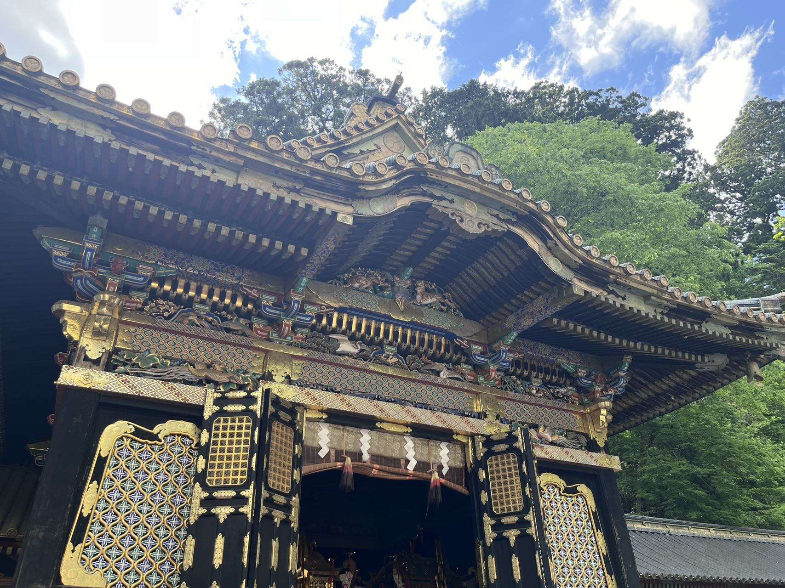
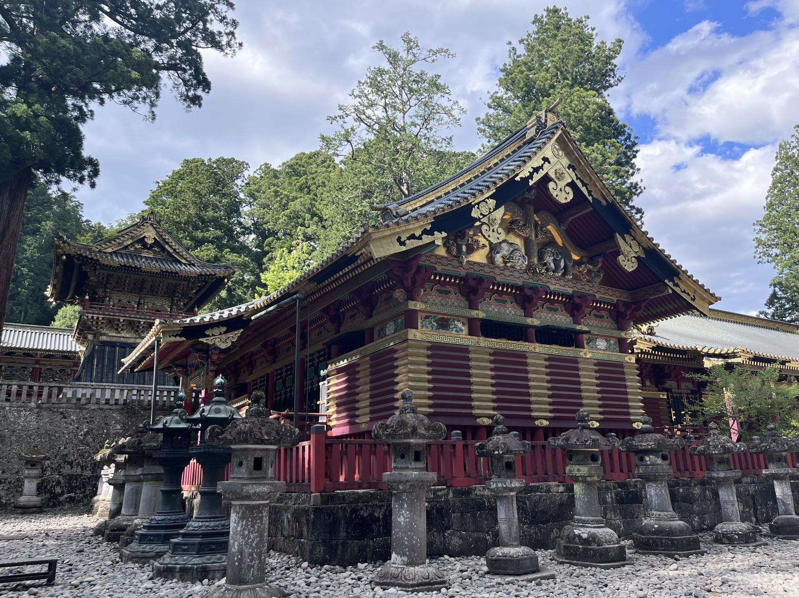
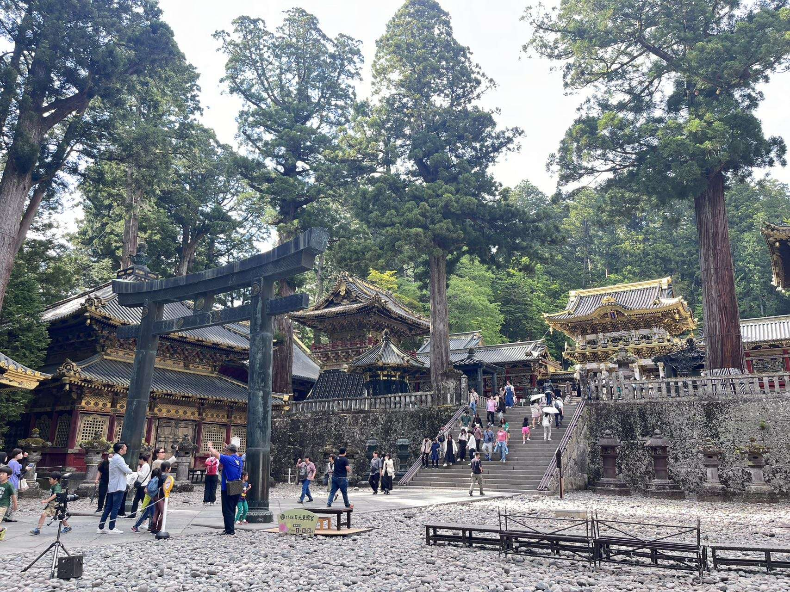
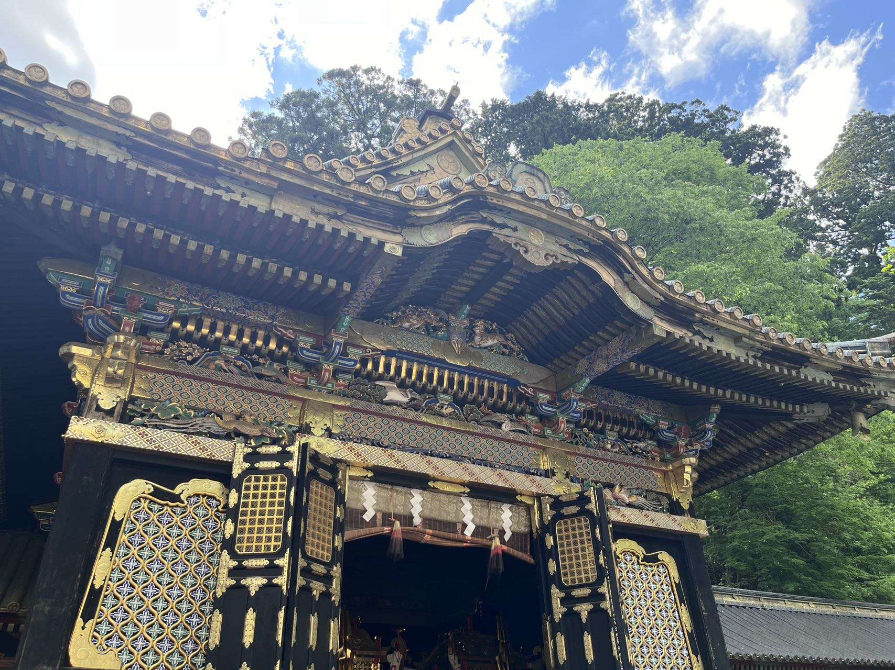
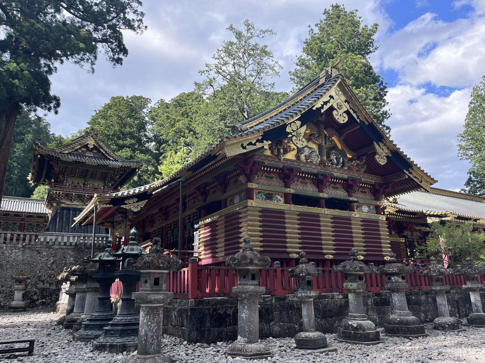
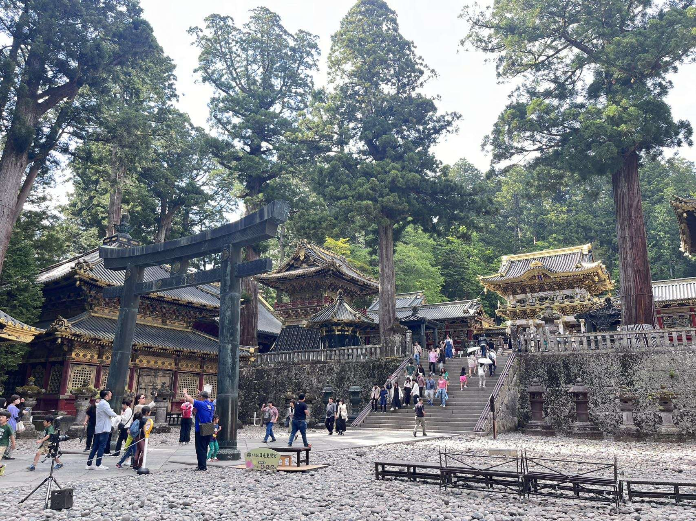

日光
About Nikkou
Nikko is located in the northwestern part of Tochigi Prefecture, best known for its vast and rich nature and the many famous sightseeing spots, including historical shrines and temples. It's a place where magnificent architecture, deep history, and untouched nature merge.

History of Traditional Temples
The area of Nikko has been a Shinto forest since pre-historic times. It has had Buddhist temples since the 9th century. The shrines and temples of Nikko, together with their natural surroundings, have for centuries been a sacred site known for its architectural and decorative masterpieces.
How to Arrive
Nikko is located about 125 kilometers north of Tokyo and makes a good one or two day trip from Tokyo. You can get there from Tokyo in about two hours.
Japan Railways and Tobu Railway jointly operate limited express services between JR Shinjuku Station and Tobu Nikko Station. The journey takes about two hours (reservations necessary). JR Kanto Bus runs highway buses several times a day from Shinjuku to Nasu Onsen.
Gallery
 




